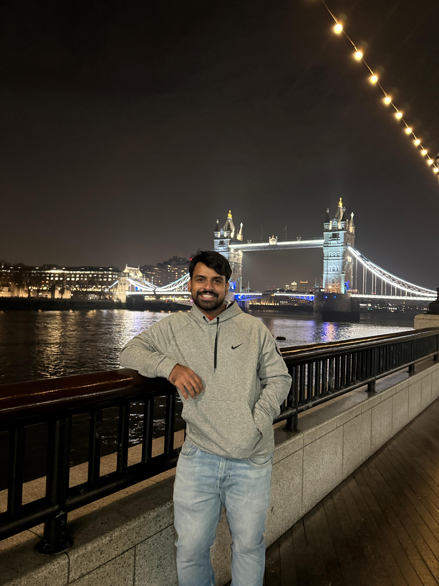

Mohamed Shemil
PhD Candidate in Economics · Centre for Development Studies, Trivandrum
I study markets, economic history, and the politics of agriculture. My work sits at the intersection of political economy, business history, and the historical sociology of markets — asking how institutions, power, and history shape the economic worlds we inhabit.

About
I am a PhD candidate in Political Economy, working on questions that sit at the intersection of markets, institutions, and history. My research draws on economic history, historical sociology, and political economy to understand how markets are made — and unmade — by politics and social structures.
Before my PhD, I worked as a faculty in UPSC coaching. I hold a Masters in Applied Economics from Centre for Development Studies (affiliated to JNU), Trivandrum. I love travelling and travels a bit, read widely, and occasionally write about things that have nothing to do with research.
Research Interests
Current Work
My dissertation examines how caste has shaped networks in Cardamom markets in South India. By studying the history of Cardamom production and business from 1896 to the present, I try to understand the changing dynamics of caste relations around this crop. By using a combination of archival research, oral histories, and secondary data analysis, I show the elitist nature of the market and ways in which access was restricted and continues to be restricted along caste lines. I am currently writing my dissertation and expect to defend in 2027. My work is supervised by Prof. Thiagu Ranganathan at Centre for Development Studies, Trivandrum.
Contact
You can reach me at kalayath22phd@cds.edu. I am also on Twitter / X and Google Scholar.